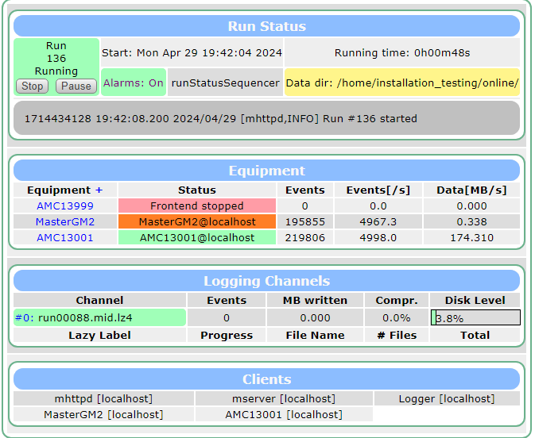

mbggpscap
New capture: CH0: 2024-04-29 08:35:35.7975583 UTC New capture: CH0: 2024-04-29 08:35:35.7977584 UTC New capture: CH0: 2024-04-29 08:35:35.7979585 UTC New capture: CH0: 2024-04-29 08:35:35.7981586 UTC New capture: CH0: 2024-04-29 08:35:35.7983586 UTC New capture: CH0: 2024-04-29 08:35:35.7987588 UTC New capture: CH0: 2024-04-29 08:35:35.7989589 UTC New capture: CH0: 2024-04-29 08:35:35.7991589 UTC New capture: CH0: 2024-04-29 08:35:35.7993590 UTC New capture: CH0: 2024-04-29 08:35:35.7995591 UTC New capture: CH0: 2024-04-29 08:35:35.7997592 UTC New capture: CH0: 2024-04-29 08:35:35.7999592 UTC New capture: CH0: 2024-04-29 08:35:35.8003594 UTC New capture: CH0: 2024-04-29 08:35:35.8005595 UTC New capture: CH0: 2024-04-29 08:35:35.8007595 UTC New capture: CH0: 2024-04-29 08:35:35.8009596 UTC New capture: CH0: 2024-04-29 08:35:35.8011597 UTC New capture: CH0: 2024-04-29 08:35:35.8013598 UTC New capture: CH0: 2024-04-29 08:35:35.8015598 UTC New capture: CH0: 2024-04-29 08:35:35.8019600 UTC
New capture: CH0: 2024-04-29 08:35:35.7975583 UTC
New capture: CH0: 2024-04-29 08:35:35.7977584 UTC
New capture: CH0: 2024-04-29 08:35:35.7979585 UTC
New capture: CH0: 2024-04-29 08:35:35.7981586 UTC
New capture: CH0: 2024-04-29 08:35:35.7983586 UTC
New capture: CH0: 2024-04-29 08:35:35.7987588 UTC
New capture: CH0: 2024-04-29 08:35:35.7989589 UTC
New capture: CH0: 2024-04-29 08:35:35.7991589 UTC
New capture: CH0: 2024-04-29 08:35:35.7993590 UTC
New capture: CH0: 2024-04-29 08:35:35.7995591 UTC
New capture: CH0: 2024-04-29 08:35:35.7997592 UTC
New capture: CH0: 2024-04-29 08:35:35.7999592 UTC
New capture: CH0: 2024-04-29 08:35:35.8003594 UTC
New capture: CH0: 2024-04-29 08:35:35.8005595 UTC
New capture: CH0: 2024-04-29 08:35:35.8007595 UTC
New capture: CH0: 2024-04-29 08:35:35.8009596 UTC
New capture: CH0: 2024-04-29 08:35:35.8011597 UTC
New capture: CH0: 2024-04-29 08:35:35.8013598 UTC
New capture: CH0: 2024-04-29 08:35:35.8015598 UTC
New capture: CH0: 2024-04-29 08:35:35.8019600 UTCSome plots of timing data taken from mbggpscap as seen above running at an internal trigger rate of 5kHz. I only included data after lines like:
New capture: CH0: 2024-04-29 09:38:02.1233820 UTC << BUF OVR
New capture: CH0: 2024-04-29 09:38:02.1233820 UTC << BUF OVRstopped occuring (so sort of a "steady state").
All captures scatter
All captures histogram
"Normal" captures scatter
"Normal" captures scatter with a break
"Normal" captures histogram
I repeated the "exercise" at 4kHz.
Some output:
New capture: CH0: 2024-04-29 09:38:05.5506653 UTC New capture: CH0: 2024-04-29 09:38:05.5509154 UTC New capture: CH0: 2024-04-29 09:38:05.5511655 UTC New capture: CH0: 2024-04-29 09:38:05.5581676 UTC New capture: CH0: 2024-04-29 09:38:05.5584176 UTC New capture: CH0: 2024-04-29 09:38:05.5586677 UTC New capture: CH0: 2024-04-29 09:38:05.5589178 UTC New capture: CH0: 2024-04-29 09:38:05.5591679 UTC New capture: CH0: 2024-04-29 09:38:05.5594179 UTC New capture: CH0: 2024-04-29 09:38:05.5599181 UTC New capture: CH0: 2024-04-29 09:38:05.5601682 UTC New capture: CH0: 2024-04-29 09:38:05.5604182 UTC New capture: CH0: 2024-04-29 09:38:05.5606683 UTC New capture: CH0: 2024-04-29 09:38:05.5609184 UTC New capture: CH0: 2024-04-29 09:38:05.5611685 UTC New capture: CH0: 2024-04-29 09:38:05.5614185 UTC New capture: CH0: 2024-04-29 09:38:05.5619187 UTC New capture: CH0: 2024-04-29 09:38:05.5621688 UTC New capture: CH0: 2024-04-29 09:38:05.5624189 UTC
New capture: CH0: 2024-04-29 09:38:05.5506653 UTC
New capture: CH0: 2024-04-29 09:38:05.5509154 UTC
New capture: CH0: 2024-04-29 09:38:05.5511655 UTC
New capture: CH0: 2024-04-29 09:38:05.5581676 UTC
New capture: CH0: 2024-04-29 09:38:05.5584176 UTC
New capture: CH0: 2024-04-29 09:38:05.5586677 UTC
New capture: CH0: 2024-04-29 09:38:05.5589178 UTC
New capture: CH0: 2024-04-29 09:38:05.5591679 UTC
New capture: CH0: 2024-04-29 09:38:05.5594179 UTC
New capture: CH0: 2024-04-29 09:38:05.5599181 UTC
New capture: CH0: 2024-04-29 09:38:05.5601682 UTC
New capture: CH0: 2024-04-29 09:38:05.5604182 UTC
New capture: CH0: 2024-04-29 09:38:05.5606683 UTC
New capture: CH0: 2024-04-29 09:38:05.5609184 UTC
New capture: CH0: 2024-04-29 09:38:05.5611685 UTC
New capture: CH0: 2024-04-29 09:38:05.5614185 UTC
New capture: CH0: 2024-04-29 09:38:05.5619187 UTC
New capture: CH0: 2024-04-29 09:38:05.5621688 UTC
New capture: CH0: 2024-04-29 09:38:05.5624189 UTCAll captures scatter
All captures histogram
"Normal" captures scatter
"Normal" captures scatter with a break
"Normal" captures histogram
Added some timing to the trigger thread, here's a snippet of the output
Time taken for receiving GPS trigger: 6 microseconds Time taken for sending EOF signal: 4 microseconds Total time taken: 35 microseconds UCAP event received: 1714427301 seconds, 1021635023 fractions Time taken for getting ucap event: 9 microseconds Time taken for printing event timestamp: 2 microseconds Trigger Time: 2024-04-29 21:48:21.2378679 Time taken for getting current timestamp: 4 microseconds Current Time: 2024-04-29 21:48:21.4653731, Latency: 0.5 us Time taken for getting status of buffer: 11 microseconds Buffers Used: 582, Buffers Capacity: 584 Time taken for getting time of receipt: 0 microseconds GPS End Of Fill trigger received Time taken for receiving GPS trigger: 6 microseconds Time taken for sending EOF signal: 4 microseconds Total time taken: 36 microseconds UCAP event received: 1714427301 seconds, 1023138605 fractions Time taken for getting ucap event: 9 microseconds Time taken for printing event timestamp: 2 microseconds Trigger Time: 2024-04-29 21:48:21.2382180 Time taken for getting current timestamp: 4 microseconds Current Time: 2024-04-29 21:48:21.4657363, Latency: 0.5 us Time taken for getting status of buffer: 10 microseconds Buffers Used: 582, Buffers Capacity: 584 Time taken for getting time of receipt: 0 microseconds GPS End Of Fill trigger received Time taken for receiving GPS trigger: 5 microseconds Time taken for sending EOF signal: 4 microseconds Total time taken: 34 microseconds UCAP event received: 1714427301 seconds, 1026145726 fractions Time taken for getting ucap event: 9 microseconds Time taken for printing event timestamp: 2 microseconds Trigger Time: 2024-04-29 21:48:21.2389181 Time taken for getting current timestamp: 4 microseconds Current Time: 2024-04-29 21:48:21.4661028, Latency: 0.5 us Time taken for getting status of buffer: 17 microseconds Buffers Used: 583, Buffers Capacity: 584 Time taken for getting time of receipt: 0 microseconds
Time taken for receiving GPS trigger: 6 microseconds
Time taken for sending EOF signal: 4 microseconds
Total time taken: 35 microseconds
UCAP event received: 1714427301 seconds, 1021635023 fractions
Time taken for getting ucap event: 9 microseconds
Time taken for printing event timestamp: 2 microseconds
Trigger Time: 2024-04-29 21:48:21.2378679
Time taken for getting current timestamp: 4 microseconds
Current Time: 2024-04-29 21:48:21.4653731, Latency: 0.5 us
Time taken for getting status of buffer: 11 microseconds
Buffers Used: 582, Buffers Capacity: 584
Time taken for getting time of receipt: 0 microseconds
GPS End Of Fill trigger received
Time taken for receiving GPS trigger: 6 microseconds
Time taken for sending EOF signal: 4 microseconds
Total time taken: 36 microseconds
UCAP event received: 1714427301 seconds, 1023138605 fractions
Time taken for getting ucap event: 9 microseconds
Time taken for printing event timestamp: 2 microseconds
Trigger Time: 2024-04-29 21:48:21.2382180
Time taken for getting current timestamp: 4 microseconds
Current Time: 2024-04-29 21:48:21.4657363, Latency: 0.5 us
Time taken for getting status of buffer: 10 microseconds
Buffers Used: 582, Buffers Capacity: 584
Time taken for getting time of receipt: 0 microseconds
GPS End Of Fill trigger received
Time taken for receiving GPS trigger: 5 microseconds
Time taken for sending EOF signal: 4 microseconds
Total time taken: 34 microseconds
UCAP event received: 1714427301 seconds, 1026145726 fractions
Time taken for getting ucap event: 9 microseconds
Time taken for printing event timestamp: 2 microseconds
Trigger Time: 2024-04-29 21:48:21.2389181
Time taken for getting current timestamp: 4 microseconds
Current Time: 2024-04-29 21:48:21.4661028, Latency: 0.5 us
Time taken for getting status of buffer: 17 microseconds
Buffers Used: 583, Buffers Capacity: 584
Time taken for getting time of receipt: 0 microsecondsI don't see any bottleneck, here are the explicit timings made:
else if(trigger_source==GPS){
PCPS_HR_TIME ucap;
PCPS_TIME_STAMP ts_now;
char ws[80];
int32_t mbg_latency = 0;
int rc = mbg_get_ucap_event(dh_gps, &ucap);
if (rc != MBG_SUCCESS) {
printf("Error: mbg_get_ucap_event() FAILED !\n");
usleep(1000);
continue;
}
auto start_time = std::chrono::steady_clock::now();
printf("UCAP event received: %ld seconds, %ld fractions\n", ucap.tstamp.sec, ucap.tstamp.frac);
auto end_time = std::chrono::steady_clock::now();
auto elapsed_time = std::chrono::duration_cast<std::chrono::microseconds>(end_time - start_time).count();
printf("Time taken for getting ucap event: %ld microseconds\n", elapsed_time);
long int total_time = elapsed_time;
if ((ucap.tstamp.sec || ucap.tstamp.frac)) {
gps_evnt_counter++;
start_time = std::chrono::steady_clock::now();
mbg_snprint_hr_tstamp(ws, sizeof(ws), &ucap.tstamp, 0);
end_time = std::chrono::steady_clock::now();
elapsed_time = std::chrono::duration_cast<std::chrono::microseconds>(end_time - start_time).count();
printf("Time taken for printing event timestamp: %ld microseconds\n", elapsed_time);
total_time += elapsed_time;
printf("Trigger Time: %s\n", ws);
start_time = std::chrono::steady_clock::now();
mbg_get_fast_hr_timestamp_comp(dh_gps, &ts_now, &mbg_latency);
end_time = std::chrono::steady_clock::now();
elapsed_time = std::chrono::duration_cast<std::chrono::microseconds>(end_time - start_time).count();
printf("Time taken for getting current timestamp: %ld microseconds\n", elapsed_time);
total_time += elapsed_time;
mbg_snprint_hr_tstamp(ws, sizeof(ws), &ts_now, 0);
printf("Current Time: %s, Latency: %.1f us \n", ws, (double)mbg_latency / 10.);
start_time = std::chrono::steady_clock::now();
PCPS_UCAP_ENTRIES p_entries;
mbg_get_ucap_entries(dh_gps, &p_entries);
end_time = std::chrono::steady_clock::now();
elapsed_time = std::chrono::duration_cast<std::chrono::microseconds>(end_time - start_time).count();
printf("Time taken for getting status of buffer: %ld microseconds\n", elapsed_time);
total_time += elapsed_time;
printf("Buffers Used: %3i, Buffers Capacity: %3i \n", p_entries.used, p_entries.max);
gps_tstamp_cap = ucap.tstamp;
gps_tstamp_now = ts_now;
start_time = std::chrono::steady_clock::now();
struct timeval tv_poll;
int status = gettimeofday(&tv_poll, NULL);
if (status != 0) {
printf("ERROR! gettimeofday() failed\n");
tv_poll.tv_sec = 0;
tv_poll.tv_usec = 0;
}
end_time = std::chrono::steady_clock::now();
elapsed_time = std::chrono::duration_cast<std::chrono::microseconds>(end_time - start_time).count();
printf("Time taken for getting time of receipt: %ld microseconds\n", elapsed_time);
total_time += elapsed_time;
start_time = std::chrono::steady_clock::now();
printf("GPS End Of Fill trigger received\n");
end_time = std::chrono::steady_clock::now();
elapsed_time = std::chrono::duration_cast<std::chrono::microseconds>(end_time - start_time).count();
printf("Time taken for receiving GPS trigger: %ld microseconds\n", elapsed_time);
total_time += elapsed_time;
trigger_time_info.trigger_nr = trigger_counter;
trigger_time_info.trigger_mask = trigger_info.mask;
trigger_time_info.time_s = ucap.tstamp.sec;
trigger_time_info.time_us = ucap.tstamp.frac;
start_time = std::chrono::steady_clock::now();
BOOL eof_sent = send_eof(trigger_time_info.trigger_nr, trigger_time_info.trigger_mask,
trigger_time_info.time_s, trigger_time_info.time_us);
end_time = std::chrono::steady_clock::now();
elapsed_time = std::chrono::duration_cast<std::chrono::microseconds>(end_time - start_time).count();
printf("Time taken for sending EOF signal: %ld microseconds\n", elapsed_time);
total_time += elapsed_time;
if (eof_sent)
trigger_counter++;
}
else{
usleep(1000);
}
printf("Total time taken: %ld microseconds\n", total_time);
}else if(trigger_source==GPS){
PCPS_HR_TIME ucap;
PCPS_TIME_STAMP ts_now;
char ws[80];
int32_t mbg_latency = 0;
int rc = mbg_get_ucap_event(dh_gps, &ucap);
if (rc != MBG_SUCCESS) {
printf("Error: mbg_get_ucap_event() FAILED !\n");
usleep(1000);
continue;
}
auto start_time = std::chrono::steady_clock::now();
printf("UCAP event received: %ld seconds, %ld fractions\n", ucap.tstamp.sec, ucap.tstamp.frac);
auto end_time = std::chrono::steady_clock::now();
auto elapsed_time = std::chrono::duration_cast<std::chrono::microseconds>(end_time - start_time).count();
printf("Time taken for getting ucap event: %ld microseconds\n", elapsed_time);
long int total_time = elapsed_time;
if ((ucap.tstamp.sec || ucap.tstamp.frac)) {
gps_evnt_counter++;
start_time = std::chrono::steady_clock::now();
mbg_snprint_hr_tstamp(ws, sizeof(ws), &ucap.tstamp, 0);
end_time = std::chrono::steady_clock::now();
elapsed_time = std::chrono::duration_cast<std::chrono::microseconds>(end_time - start_time).count();
printf("Time taken for printing event timestamp: %ld microseconds\n", elapsed_time);
total_time += elapsed_time;
printf("Trigger Time: %s\n", ws);
start_time = std::chrono::steady_clock::now();
mbg_get_fast_hr_timestamp_comp(dh_gps, &ts_now, &mbg_latency);
end_time = std::chrono::steady_clock::now();
elapsed_time = std::chrono::duration_cast<std::chrono::microseconds>(end_time - start_time).count();
printf("Time taken for getting current timestamp: %ld microseconds\n", elapsed_time);
total_time += elapsed_time;
mbg_snprint_hr_tstamp(ws, sizeof(ws), &ts_now, 0);
printf("Current Time: %s, Latency: %.1f us \n", ws, (double)mbg_latency / 10.);
start_time = std::chrono::steady_clock::now();
PCPS_UCAP_ENTRIES p_entries;
mbg_get_ucap_entries(dh_gps, &p_entries);
end_time = std::chrono::steady_clock::now();
elapsed_time = std::chrono::duration_cast<std::chrono::microseconds>(end_time - start_time).count();
printf("Time taken for getting status of buffer: %ld microseconds\n", elapsed_time);
total_time += elapsed_time;
printf("Buffers Used: %3i, Buffers Capacity: %3i \n", p_entries.used, p_entries.max);
gps_tstamp_cap = ucap.tstamp;
gps_tstamp_now = ts_now;
start_time = std::chrono::steady_clock::now();
struct timeval tv_poll;
int status = gettimeofday(&tv_poll, NULL);
if (status != 0) {
printf("ERROR! gettimeofday() failed\n");
tv_poll.tv_sec = 0;
tv_poll.tv_usec = 0;
}
end_time = std::chrono::steady_clock::now();
elapsed_time = std::chrono::duration_cast<std::chrono::microseconds>(end_time - start_time).count();
printf("Time taken for getting time of receipt: %ld microseconds\n", elapsed_time);
total_time += elapsed_time;
start_time = std::chrono::steady_clock::now();
printf("GPS End Of Fill trigger received\n");
end_time = std::chrono::steady_clock::now();
elapsed_time = std::chrono::duration_cast<std::chrono::microseconds>(end_time - start_time).count();
printf("Time taken for receiving GPS trigger: %ld microseconds\n", elapsed_time);
total_time += elapsed_time;
trigger_time_info.trigger_nr = trigger_counter;
trigger_time_info.trigger_mask = trigger_info.mask;
trigger_time_info.time_s = ucap.tstamp.sec;
trigger_time_info.time_us = ucap.tstamp.frac;
start_time = std::chrono::steady_clock::now();
BOOL eof_sent = send_eof(trigger_time_info.trigger_nr, trigger_time_info.trigger_mask,
trigger_time_info.time_s, trigger_time_info.time_us);
end_time = std::chrono::steady_clock::now();
elapsed_time = std::chrono::duration_cast<std::chrono::microseconds>(end_time - start_time).count();
printf("Time taken for sending EOF signal: %ld microseconds\n", elapsed_time);
total_time += elapsed_time;
if (eof_sent)
trigger_counter++;
}
else{
usleep(1000);
}
printf("Total time taken: %ld microseconds\n", total_time);
}This is further evidence the issue is with the meinberg card itself, as the code can keep up at a rate of ~40us = ~25kHz.
By adding an "ODB mode" to the trigger_thread in master, I'm able to get the master to keep up with the AMC triggers.

Of course, we lose the timestamp data. Relevant changes to code are mostly made here (MasterGM2/frontend.cpp:2233)
else if(trigger_source==ODB){
//Update the "current event_read" to be consistent with the ODB
int size = sizeof(current_event_read);
char key[1024];
sprintf(key, "/Equipment/%s/Statistics/Events sent", master_settings_odb.encoder_fe);
if (db_get_value(hDB, 0, key, ¤t_event_read, &size, TID_DOUBLE, FALSE) != DB_SUCCESS) {
cm_msg(MERROR, __FUNCTION__, "Cannot Get Value [%s] in ODB", key);
break;
}
// Print the values of last_event_read and current_event_read for debugging
//std::cout << "Last Event Read: " << last_event_read << std::endl;
//std::cout << "Current Event Read: " << current_event_read << std::endl;
if (last_event_read != current_event_read) { //Cause an event to be made (?)
// Calculate the difference between current_event_read and last_event_read
int event_difference = static_cast<int>(current_event_read - last_event_read);
// Cap the event difference to the maximum allowed value
event_difference = std::min(event_difference, MAX_EVENT_DIFFERENCE);
// Get time of day from system
status = gettimeofday( &tv_poll, NULL);
if ( status != 0)
{
printf("ERROR! gettimeofday() failed\n");
tv_poll.tv_sec = 0;
tv_poll.tv_usec = 0;
}
//printf("trigger_thread: GPS End Of Fill trigger received\n");
for (int i = 0; i < event_difference; ++i) {
trigger_time_info.trigger_nr = trigger_counter;
trigger_time_info.trigger_mask = trigger_info.mask;
trigger_time_info.time_s = tv_poll.tv_sec;
trigger_time_info.time_us = tv_poll.tv_usec;
trigger_time_info.time_recv_s = tv_poll.tv_sec;
trigger_time_info.time_recv_us = tv_poll.tv_usec;
// Send the EOF signal to slaves
BOOL eof_sent = send_eof(trigger_time_info.trigger_nr, trigger_time_info.trigger_mask,
trigger_time_info.time_s, trigger_time_info.time_us);
// increment run-by-run trigger counter
if ( eof_sent ) trigger_counter++;
}
last_event_read = current_event_read;
}
}
else if(trigger_source==ODB){
//Update the "current event_read" to be consistent with the ODB
int size = sizeof(current_event_read);
char key[1024];
sprintf(key, "/Equipment/%s/Statistics/Events sent", master_settings_odb.encoder_fe);
if (db_get_value(hDB, 0, key, ¤t_event_read, &size, TID_DOUBLE, FALSE) != DB_SUCCESS) {
cm_msg(MERROR, __FUNCTION__, "Cannot Get Value [%s] in ODB", key);
break;
}
// Print the values of last_event_read and current_event_read for debugging
//std::cout << "Last Event Read: " << last_event_read << std::endl;
//std::cout << "Current Event Read: " << current_event_read << std::endl;
if (last_event_read != current_event_read) { //Cause an event to be made (?)
// Calculate the difference between current_event_read and last_event_read
int event_difference = static_cast<int>(current_event_read - last_event_read);
// Cap the event difference to the maximum allowed value
event_difference = std::min(event_difference, MAX_EVENT_DIFFERENCE);
// Get time of day from system
status = gettimeofday( &tv_poll, NULL);
if ( status != 0)
{
printf("ERROR! gettimeofday() failed\n");
tv_poll.tv_sec = 0;
tv_poll.tv_usec = 0;
}
//printf("trigger_thread: GPS End Of Fill trigger received\n");
for (int i = 0; i < event_difference; ++i) {
trigger_time_info.trigger_nr = trigger_counter;
trigger_time_info.trigger_mask = trigger_info.mask;
trigger_time_info.time_s = tv_poll.tv_sec;
trigger_time_info.time_us = tv_poll.tv_usec;
trigger_time_info.time_recv_s = tv_poll.tv_sec;
trigger_time_info.time_recv_us = tv_poll.tv_usec;
// Send the EOF signal to slaves
BOOL eof_sent = send_eof(trigger_time_info.trigger_nr, trigger_time_info.trigger_mask,
trigger_time_info.time_s, trigger_time_info.time_us);
// increment run-by-run trigger counter
if ( eof_sent ) trigger_counter++;
}
last_event_read = current_event_read;
}
}
20:26:20.521 2024/04/29 [AMC13001,INFO] Requesting Encoder FC7 to throttle TTC triggers to clear TCP/GPU ring buffers. 20:26:20.521 2024/04/29 [AMC13001,TALK] Warning: DAQ | AMC13001 TCP Ring buffer close to full (100.000000%) 20:11:15.827 2024/04/29 [MasterGM2,TALK] Alarm: DAQ | MasterGM2 discovered severe fill number mismatch 20:09:33.048 2024/04/29 [mhttpd,INFO] Run #137 started
20:26:20.521 2024/04/29 [AMC13001,INFO] Requesting Encoder FC7 to throttle TTC triggers to clear TCP/GPU ring buffers.
20:26:20.521 2024/04/29 [AMC13001,TALK] Warning: DAQ | AMC13001 TCP Ring buffer close to full (100.000000%)
20:11:15.827 2024/04/29 [MasterGM2,TALK] Alarm: DAQ | MasterGM2 discovered severe fill number mismatch
20:09:33.048 2024/04/29 [mhttpd,INFO] Run #137 startedThen eventually:
23:40:05.004 2024/04/29 [AMC13001,INFO] Requesting Encoder FC7 to throttle TTC triggers to clear TCP/GPU ring buffers. 23:40:00.100 2024/04/29 [MasterGM2,TALK] Alarm: CCC Run Aborted 23:40:00.010 2024/04/29 [AMC13001,INFO] Requesting Encoder FC7 to throttle TTC triggers to clear TCP/GPU ring buffers. 23:39:55.005 2024/04/29 [AMC13001,INFO] Requesting Encoder FC7 to throttle TTC triggers to clear TCP/GPU ring buffers. 23:39:50.011 2024/04/29 [AMC13001,INFO] Requesting Encoder FC7 to throttle TTC triggers to clear TCP/GPU ring buffers. 23:39:45.006 2024/04/29 [AMC13001,INFO] Requesting Encoder FC7 to throttle TTC triggers to clear TCP/GPU ring buffers. 23:39:40.012 2024/04/29 [AMC13001,INFO] Requesting Encoder FC7 to throttle TTC triggers to clear TCP/GPU ring buffers. 23:39:35.007 2024/04/29 [AMC13001,INFO] Requesting Encoder FC7 to throttle TTC triggers to clear TCP/GPU ring buffers. 23:39:30.002 2024/04/29 [AMC13001,INFO] Requesting Encoder FC7 to throttle TTC triggers to clear TCP/GPU ring buffers. 23:39:25.008 2024/04/29 [AMC13001,INFO] Requesting Encoder FC7 to throttle TTC triggers to clear TCP/GPU ring buffers. 23:39:20.003 2024/04/29 [AMC13001,INFO] Requesting Encoder FC7 to throttle TTC triggers to clear TCP/GPU ring buffers. 23:39:15.009 2024/04/29 [AMC13001,INFO] Requesting Encoder FC7 to throttle TTC triggers to clear TCP/GPU ring buffers. 23:39:10.004 2024/04/29 [AMC13001,INFO] Requesting Encoder FC7 to throttle TTC triggers to clear TCP/GPU ring buffers. 23:39:05.010 2024/04/29 [AMC13001,INFO] Requesting Encoder FC7 to throttle TTC triggers to clear TCP/GPU ring buffers. 23:39:00.013 2024/04/29 [MasterGM2,TALK] Alarm: CCC Run Aborted 23:39:00.005 2024/04/29 [AMC13001,INFO] Requesting Encoder FC7 to throttle TTC triggers to clear TCP/GPU ring buffers. 23:38:55.011 2024/04/29 [AMC13001,INFO] Requesting Encoder FC7 to throttle TTC triggers to clear TCP/GPU ring buffers. 23:38:50.006 2024/04/29 [AMC13001,INFO] Requesting Encoder FC7 to throttle TTC triggers to clear TCP/GPU ring buffers. 23:38:45.012 2024/04/29 [AMC13001,INFO] Requesting Encoder FC7 to throttle TTC triggers to clear TCP/GPU ring buffers. 23:38:40.007 2024/04/29 [AMC13001,INFO] Requesting Encoder FC7 to throttle TTC triggers to clear TCP/GPU ring buffers. 23:38:35.002 2024/04/29 [AMC13001,INFO] Requesting Encoder FC7 to throttle TTC triggers to clear TCP/GPU ring buffers. 23:38:30.008 2024/04/29 [AMC13001,INFO] Requesting Encoder FC7 to throttle TTC triggers to clear TCP/GPU ring buffers. 23:38:25.003 2024/04/29 [AMC13001,INFO] Requesting Encoder FC7 to throttle TTC triggers to clear TCP/GPU ring buffers. 23:38:20.009 2024/04/29 [AMC13001,INFO] Requesting Encoder FC7 to throttle TTC triggers to clear TCP/GPU ring buffers. 23:38:15.004 2024/04/29 [AMC13001,INFO] Requesting Encoder FC7 to throttle TTC triggers to clear TCP/GPU ring buffers. 23:38:10.010 2024/04/29 [AMC13001,INFO] Requesting Encoder FC7 to throttle TTC triggers to clear TCP/GPU ring buffers. 23:38:05.005 2024/04/29 [AMC13001,INFO] Requesting Encoder FC7 to throttle TTC triggers to clear TCP/GPU ring buffers. 23:38:00.640 2024/04/29 [MasterGM2,TALK] Alarm: CCC Run Aborted 23:38:00.011 2024/04/29 [AMC13001,INFO] Requesting Encoder FC7 to throttle TTC triggers to clear TCP/GPU ring buffers. 23:37:55.006 2024/04/29 [AMC13001,INFO] Requesting Encoder FC7 to throttle TTC triggers to clear TCP/GPU ring buffers. 23:37:50.012 2024/04/29 [AMC13001,INFO] Requesting Encoder FC7 to throttle TTC triggers to clear TCP/GPU ring buffers. 23:37:45.007 2024/04/29 [AMC13001,INFO] Requesting Encoder FC7 to throttle TTC triggers to clear TCP/GPU ring buffers. 23:37:40.002 2024/04/29 [AMC13001,INFO] Requesting Encoder FC7 to throttle TTC triggers to clear TCP/GPU ring buffers. 23:37:35.008 2024/04/29 [AMC13001,INFO] Requesting Encoder FC7 to throttle TTC triggers to clear TCP/GPU ring buffers. 23:37:30.003 2024/04/29 [AMC13001,INFO] Requesting Encoder FC7 to throttle TTC triggers to clear TCP/GPU ring buffers. 23:37:25.009 2024/04/29 [AMC13001,INFO] Requesting Encoder FC7 to throttle TTC triggers to clear TCP/GPU ring buffers. 23:37:20.004 2024/04/29 [AMC13001,INFO] Requesting Encoder FC7 to throttle TTC triggers to clear TCP/GPU ring buffers. 23:37:15.010 2024/04/29 [AMC13001,INFO] Requesting Encoder FC7 to throttle TTC triggers to clear TCP/GPU ring buffers. 23:37:10.005 2024/04/29 [AMC13001,INFO] Requesting Encoder FC7 to throttle TTC triggers to clear TCP/GPU ring buffers. 23:37:05.011 2024/04/29 [AMC13001,INFO] Requesting Encoder FC7 to throttle TTC triggers to clear TCP/GPU ring buffers. 23:37:00.006 2024/04/29 [AMC13001,INFO] Requesting Encoder FC7 to throttle TTC triggers to clear TCP/GPU ring buffers. 23:36:55.012 2024/04/29 [AMC13001,INFO] Requesting Encoder FC7 to throttle TTC triggers to clear TCP/GPU ring buffers. 23:36:50.007 2024/04/29 [AMC13001,INFO] Requesting Encoder FC7 to throttle TTC triggers to clear TCP/GPU ring buffers. 23:36:45.002 2024/04/29 [AMC13001,INFO] Requesting Encoder FC7 to throttle TTC triggers to clear TCP/GPU ring buffers. 23:36:40.008 2024/04/29 [AMC13001,INFO] Requesting Encoder FC7 to throttle TTC triggers to clear TCP/GPU ring buffers. 23:36:35.003 2024/04/29 [AMC13001,INFO] Requesting Encoder FC7 to throttle TTC triggers to clear TCP/GPU ring buffers. 23:36:30.009 2024/04/29 [AMC13001,INFO] Requesting Encoder FC7 to throttle TTC triggers to clear TCP/GPU ring buffers. 23:36:25.004 2024/04/29 [AMC13001,INFO] Requesting Encoder FC7 to throttle TTC triggers to clear TCP/GPU ring buffers. 23:36:20.010 2024/04/29 [AMC13001,INFO] Requesting Encoder FC7 to throttle TTC triggers to clear TCP/GPU ring buffers. 23:36:15.005 2024/04/29 [AMC13001,INFO] Requesting Encoder FC7 to throttle TTC triggers to clear TCP/GPU ring buffers. 23:36:10.011 2024/04/29 [AMC13001,INFO] Requesting Encoder FC7 to throttle TTC triggers to clear TCP/GPU ring buffers. 23:36:05.006 2024/04/29 [AMC13001,INFO] Requesting Encoder FC7 to throttle TTC triggers to clear TCP/GPU ring buffers. 23:36:00.012 2024/04/29 [AMC13001,INFO] Requesting Encoder FC7 to throttle TTC triggers to clear TCP/GPU ring buffers. 23:35:55.007 2024/04/29 [AMC13001,INFO] Requesting Encoder FC7 to throttle TTC triggers to clear TCP/GPU ring buffers. 23:35:50.002 2024/04/29 [AMC13001,INFO] Requesting Encoder FC7 to throttle TTC triggers to clear TCP/GPU ring buffers. 23:35:45.008 2024/04/29 [AMC13001,INFO] Requesting Encoder FC7 to throttle TTC triggers to clear TCP/GPU ring buffers. 23:35:40.003 2024/04/29 [AMC13001,INFO] Requesting Encoder FC7 to throttle TTC triggers to clear TCP/GPU ring buffers
23:40:05.004 2024/04/29 [AMC13001,INFO] Requesting Encoder FC7 to throttle TTC triggers to clear TCP/GPU ring buffers.
23:40:00.100 2024/04/29 [MasterGM2,TALK] Alarm: CCC Run Aborted
23:40:00.010 2024/04/29 [AMC13001,INFO] Requesting Encoder FC7 to throttle TTC triggers to clear TCP/GPU ring buffers.
23:39:55.005 2024/04/29 [AMC13001,INFO] Requesting Encoder FC7 to throttle TTC triggers to clear TCP/GPU ring buffers.
23:39:50.011 2024/04/29 [AMC13001,INFO] Requesting Encoder FC7 to throttle TTC triggers to clear TCP/GPU ring buffers.
23:39:45.006 2024/04/29 [AMC13001,INFO] Requesting Encoder FC7 to throttle TTC triggers to clear TCP/GPU ring buffers.
23:39:40.012 2024/04/29 [AMC13001,INFO] Requesting Encoder FC7 to throttle TTC triggers to clear TCP/GPU ring buffers.
23:39:35.007 2024/04/29 [AMC13001,INFO] Requesting Encoder FC7 to throttle TTC triggers to clear TCP/GPU ring buffers.
23:39:30.002 2024/04/29 [AMC13001,INFO] Requesting Encoder FC7 to throttle TTC triggers to clear TCP/GPU ring buffers.
23:39:25.008 2024/04/29 [AMC13001,INFO] Requesting Encoder FC7 to throttle TTC triggers to clear TCP/GPU ring buffers.
23:39:20.003 2024/04/29 [AMC13001,INFO] Requesting Encoder FC7 to throttle TTC triggers to clear TCP/GPU ring buffers.
23:39:15.009 2024/04/29 [AMC13001,INFO] Requesting Encoder FC7 to throttle TTC triggers to clear TCP/GPU ring buffers.
23:39:10.004 2024/04/29 [AMC13001,INFO] Requesting Encoder FC7 to throttle TTC triggers to clear TCP/GPU ring buffers.
23:39:05.010 2024/04/29 [AMC13001,INFO] Requesting Encoder FC7 to throttle TTC triggers to clear TCP/GPU ring buffers.
23:39:00.013 2024/04/29 [MasterGM2,TALK] Alarm: CCC Run Aborted
23:39:00.005 2024/04/29 [AMC13001,INFO] Requesting Encoder FC7 to throttle TTC triggers to clear TCP/GPU ring buffers.
23:38:55.011 2024/04/29 [AMC13001,INFO] Requesting Encoder FC7 to throttle TTC triggers to clear TCP/GPU ring buffers.
23:38:50.006 2024/04/29 [AMC13001,INFO] Requesting Encoder FC7 to throttle TTC triggers to clear TCP/GPU ring buffers.
23:38:45.012 2024/04/29 [AMC13001,INFO] Requesting Encoder FC7 to throttle TTC triggers to clear TCP/GPU ring buffers.
23:38:40.007 2024/04/29 [AMC13001,INFO] Requesting Encoder FC7 to throttle TTC triggers to clear TCP/GPU ring buffers.
23:38:35.002 2024/04/29 [AMC13001,INFO] Requesting Encoder FC7 to throttle TTC triggers to clear TCP/GPU ring buffers.
23:38:30.008 2024/04/29 [AMC13001,INFO] Requesting Encoder FC7 to throttle TTC triggers to clear TCP/GPU ring buffers.
23:38:25.003 2024/04/29 [AMC13001,INFO] Requesting Encoder FC7 to throttle TTC triggers to clear TCP/GPU ring buffers.
23:38:20.009 2024/04/29 [AMC13001,INFO] Requesting Encoder FC7 to throttle TTC triggers to clear TCP/GPU ring buffers.
23:38:15.004 2024/04/29 [AMC13001,INFO] Requesting Encoder FC7 to throttle TTC triggers to clear TCP/GPU ring buffers.
23:38:10.010 2024/04/29 [AMC13001,INFO] Requesting Encoder FC7 to throttle TTC triggers to clear TCP/GPU ring buffers.
23:38:05.005 2024/04/29 [AMC13001,INFO] Requesting Encoder FC7 to throttle TTC triggers to clear TCP/GPU ring buffers.
23:38:00.640 2024/04/29 [MasterGM2,TALK] Alarm: CCC Run Aborted
23:38:00.011 2024/04/29 [AMC13001,INFO] Requesting Encoder FC7 to throttle TTC triggers to clear TCP/GPU ring buffers.
23:37:55.006 2024/04/29 [AMC13001,INFO] Requesting Encoder FC7 to throttle TTC triggers to clear TCP/GPU ring buffers.
23:37:50.012 2024/04/29 [AMC13001,INFO] Requesting Encoder FC7 to throttle TTC triggers to clear TCP/GPU ring buffers.
23:37:45.007 2024/04/29 [AMC13001,INFO] Requesting Encoder FC7 to throttle TTC triggers to clear TCP/GPU ring buffers.
23:37:40.002 2024/04/29 [AMC13001,INFO] Requesting Encoder FC7 to throttle TTC triggers to clear TCP/GPU ring buffers.
23:37:35.008 2024/04/29 [AMC13001,INFO] Requesting Encoder FC7 to throttle TTC triggers to clear TCP/GPU ring buffers.
23:37:30.003 2024/04/29 [AMC13001,INFO] Requesting Encoder FC7 to throttle TTC triggers to clear TCP/GPU ring buffers.
23:37:25.009 2024/04/29 [AMC13001,INFO] Requesting Encoder FC7 to throttle TTC triggers to clear TCP/GPU ring buffers.
23:37:20.004 2024/04/29 [AMC13001,INFO] Requesting Encoder FC7 to throttle TTC triggers to clear TCP/GPU ring buffers.
23:37:15.010 2024/04/29 [AMC13001,INFO] Requesting Encoder FC7 to throttle TTC triggers to clear TCP/GPU ring buffers.
23:37:10.005 2024/04/29 [AMC13001,INFO] Requesting Encoder FC7 to throttle TTC triggers to clear TCP/GPU ring buffers.
23:37:05.011 2024/04/29 [AMC13001,INFO] Requesting Encoder FC7 to throttle TTC triggers to clear TCP/GPU ring buffers.
23:37:00.006 2024/04/29 [AMC13001,INFO] Requesting Encoder FC7 to throttle TTC triggers to clear TCP/GPU ring buffers.
23:36:55.012 2024/04/29 [AMC13001,INFO] Requesting Encoder FC7 to throttle TTC triggers to clear TCP/GPU ring buffers.
23:36:50.007 2024/04/29 [AMC13001,INFO] Requesting Encoder FC7 to throttle TTC triggers to clear TCP/GPU ring buffers.
23:36:45.002 2024/04/29 [AMC13001,INFO] Requesting Encoder FC7 to throttle TTC triggers to clear TCP/GPU ring buffers.
23:36:40.008 2024/04/29 [AMC13001,INFO] Requesting Encoder FC7 to throttle TTC triggers to clear TCP/GPU ring buffers.
23:36:35.003 2024/04/29 [AMC13001,INFO] Requesting Encoder FC7 to throttle TTC triggers to clear TCP/GPU ring buffers.
23:36:30.009 2024/04/29 [AMC13001,INFO] Requesting Encoder FC7 to throttle TTC triggers to clear TCP/GPU ring buffers.
23:36:25.004 2024/04/29 [AMC13001,INFO] Requesting Encoder FC7 to throttle TTC triggers to clear TCP/GPU ring buffers.
23:36:20.010 2024/04/29 [AMC13001,INFO] Requesting Encoder FC7 to throttle TTC triggers to clear TCP/GPU ring buffers.
23:36:15.005 2024/04/29 [AMC13001,INFO] Requesting Encoder FC7 to throttle TTC triggers to clear TCP/GPU ring buffers.
23:36:10.011 2024/04/29 [AMC13001,INFO] Requesting Encoder FC7 to throttle TTC triggers to clear TCP/GPU ring buffers.
23:36:05.006 2024/04/29 [AMC13001,INFO] Requesting Encoder FC7 to throttle TTC triggers to clear TCP/GPU ring buffers.
23:36:00.012 2024/04/29 [AMC13001,INFO] Requesting Encoder FC7 to throttle TTC triggers to clear TCP/GPU ring buffers.
23:35:55.007 2024/04/29 [AMC13001,INFO] Requesting Encoder FC7 to throttle TTC triggers to clear TCP/GPU ring buffers.
23:35:50.002 2024/04/29 [AMC13001,INFO] Requesting Encoder FC7 to throttle TTC triggers to clear TCP/GPU ring buffers.
23:35:45.008 2024/04/29 [AMC13001,INFO] Requesting Encoder FC7 to throttle TTC triggers to clear TCP/GPU ring buffers.
23:35:40.003 2024/04/29 [AMC13001,INFO] Requesting Encoder FC7 to throttle TTC triggers to clear TCP/GPU ring buffers